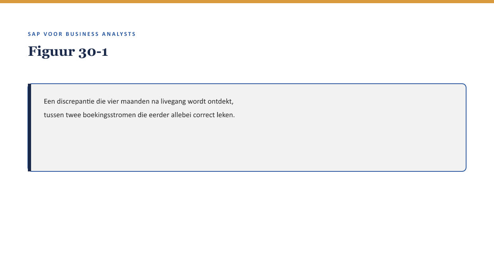

Deel 30 — Masterproef
Reader · Niveau 3 Expert · Cursus SAP voor Business Analysts · Ductus
Dit deel introduceert geen nieuwe stof. Het scenario is bewust van een andere orde dan alle voorgaande delen: geen crisis vóór een livegang, maar een discrepantie die ná livegang wordt ontdekt.
Leerdoelen
Na dit deel kun je:
- de volledige cursusstof (niveau 1-3) toepassen op een complex, realistisch scenario dat meerdere lagen tegelijk raakt;
- onderscheid maken tussen een aangetoonde fout, een aannemelijke verklaring, en onbekende oorzaken — en dat onderscheid expliciet in een rapport verwoorden;
- een bevindingen- en herstelrapport schrijven dat een besluit dient, geen geruststelling biedt;
- je analyse mondeling verdedigen tegen vier rollen die elk een ander belang vertegenwoordigen;
- terugblikken op je eigen ontwikkeling van deel 1 tot hier — van een onbeantwoordbare vraag naar een zelfstandig te verdedigen analyse.
Studielast: twee dagdelen — dagdeel A schriftelijke voorbereiding en inlevering, dagdeel B boardsimulatie.
1. Het scenario: “De discrepantie na livegang”
Het speelt zich af vier maanden ná de livegang van Meridiaans FS-PM/FS-CM-vervanging. De implementatie is voltooid, gebruikt, en tot nu toe zonder gemelde grote problemen. Bij een reguliere financiële afsluiting ontdekt een medewerker van finance een discrepantie: voor een specifieke groep polissen (degene met de historische kortingsregel — inmiddels definitief, correct in BRFplus ondergebracht, ↗ deel 12 en 26) komen de FS-PM-premieboekingen en de FS-CM-uitkeringsboekingen (bij claims op dezelfde polissen) niet consistent overeen met wat de IFRS17/FPSL-rapportage (↗ deel 27) zou verwachten.

Niemand heeft een fout gemeld. Er is geen incident geweest. De discrepantie werd alleen zichtbaar omdat iemand bij finance de cijfers zorgvuldig naast elkaar legde.
2. Wat dit scenario van de voorgaande onderscheidt
Anders dan de meeste casussen in deze cursus, is er hier geen duidelijk aanwijsbare “fout” — de premievrijstellingsregel (↗ deel 21) werkte, de cross-modulekoppeling werkte, de kortingsregel was correct geconfigureerd. En toch komt de uitkomst niet overeen met wat verwacht werd. Dit is precies de situatie waarin de vraag uit deel 29 (“is het proces aantoonbaar betrouwbaar geweest”) relevanter is dan de vraag “wie heeft de fout gemaakt” — want misschien is er geen fout, alleen een onvolledig begrepen samenspel tussen twee correct werkende onderdelen.
Kernzin — De ladder van zekerheid: aangetoond, aannemelijk, onbekend. Een goed antwoord op dit scenario maakt expliciet op welke trede elke uitspraak staat, in plaats van alles te presenteren als aangetoond.
3. De opdracht
3.1 Dagdeel A — schriftelijk rapport
Schrijf, individueel, een bevindingen- en herstelrapport van maximaal tien pagina’s, met:
- Reconstructie: wat is er waarschijnlijk gebeurd, met expliciete scheiding tussen aangetoond, aannemelijk en onbekend (↗ §2, kernzin). Gebruik de drie bouwstenen uit deel 29 §4 (BTX, documentflow, logbestanden) als bronnen voor je reconstructie.
- Cross-modulecheck: pas de vuistregel uit deel 21 §6 toe — is dit een probleem dat binnen één module lag, of op de naad tussen FS-PM en FS-CM?
- IFRS17/FPSL-toets, achteraf: was de tweetraps-toets (↗ deel 27 §4) destijds uitgevoerd op de premievrijstellingsregel? Zo niet, is dat de kern van het probleem?
- Herstelvoorstel: wat stel je voor, met een expliciete onderbouwing van wat wél en niet met zekerheid kan worden hersteld.
3.2 Dagdeel B — boardsimulatie
Verdedig je rapport in een boardsimulatie van 45 minuten, tegen vier rollen:
- CFO: wil weten wat dit financieel betekent, en of het zich elders kan herhalen.
- Toezichthouder-achtige rol (Willemien van Ballegooijen-achtig, ↗ testcursus-dossier): stelt de vaste vraag “waartegen is dit vergeleken?” en toetst of je de ladder van zekerheid (§2) consequent hebt toegepast.
- IT-architect: vraagt door op de technische reconstructie en of die daadwerkelijk aantoonbaar is (↗ deel 29).
- Externe consultant: vraagt of dit voorkomen had kunnen worden, en hoe.
De helft van de vragen wordt vooraf gedeeld, de andere helft niet — vergelijkbaar met de opzet van de masterproef in de zustercursus.
4. Wat de rubric beloont
Naar het model van de zustercursus: een onderbouwd “dit kunnen we niet met zekerheid aantonen, en dít doen we daarom wél” weegt zwaarder dan een geruststellend herstelplan dat meer zekerheid suggereert dan de feiten toestaan. Dit is de meest ongemakkelijke, en meest waardevolle, les van de hele cursus: soms is het beste antwoord een precieze beschrijving van wat je niet weet.
5. Terugblik: van deel 1 naar hier
Bij deel 1 kon Sanne — en met haar, jij — Rob Hendriks’ vraag niet beantwoorden. Bij dit deel schrijf je een rapport dat een bestuur, een toezichthouder-achtige rol, een architect en een externe consultant allemaal moet overtuigen, over een probleem dat niemand van tevoren had zien aankomen. Dat is de volledige boog van deze cursus: van “ik weet dit niet” naar “ik kan uitleggen wat ik wel en niet weet, en waarom dat genoeg is om op te handelen.”
Kernbegrippen
de ladder van zekerheid (aangetoond/aannemelijk/onbekend) · bevindingen- en herstelrapport · boardsimulatie
Samenvatting in vijf zinnen
- Het scenario speelt vier maanden ná livegang: geen gemeld incident, wel een ontdekte discrepantie tussen correct werkende onderdelen.
- De centrale vaardigheid is het onderscheiden van aangetoond, aannemelijk en onbekend — en dat onderscheid expliciet maken.
- Het rapport combineert reconstructie, cross-modulecheck, een IFRS17/FPSL-toets achteraf, en een onderbouwd herstelvoorstel.
- De verdediging test niet alleen de analyse maar ook of de ladder van zekerheid consequent is toegepast.
- Een onderbouwd “dit kunnen we niet aantonen” weegt zwaarder dan een geruststellend herstelplan dat meer zekerheid suggereert dan de feiten toestaan.